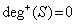
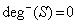
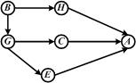
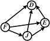
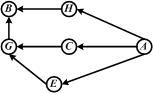
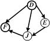
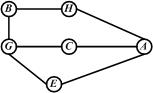
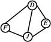

2. ATD_Graph 02. Какие виды объектов образуют структуру данных Граф ?
Множество узлов
Множество ребер. Что из себя представляет ребро Графа ?
Ребро АТД Граф - это пара узлов графа. На что же при этом указывает ребро ?
Ребро графа указывает на наличие связи между соответствующими узлами этого графа
Множество нагрузок узлов типа Е1
Матрица элементов логического типа. Каково назначение этой матрицы ?
Ребро АТД Граф - это линия, соединяющая узлы графа
Ребро графа указывает на наличие связи между нагрузками узлов этого графа
Назначение матрицы: указать на наличие связи между узлами Графа
3. ATD_Graph 03. Какие виды объектов образуют структуру данных Граф ?
Множество узлов
Множество ребер. Для чего это множество объектов используется ?
Множество ребер - это средство явного указания связи между соответствующими узлами данного графа. Единственное ли это средство указания связи ?
Нет, не единственное. Что еще, кроме ребер, может использоваться для названных целей ?
Для этих же целей может использоваться множество дуг
Множество нагрузок узлов типа Е1
Матрица элементов логического типа. Каково назначение этой матрицы ?
Назначение матрицы: указать на наличие прямого сообщения между узлами Графа
Множество ребер - это средство явного указания связи между нагрузками узлов данного графа.
Да, единственное
Для этих же целей может использоваться матрица транзитивного замыкания
4. ATD_Graph 04. Какова особенность ориентированных графов по сравнению с неориентированными ?
В ориентированных графах объектами второй группы является множество дуг. Как обозначается дуга, связывающая узлы графа А и В ?
<А, B>. На что указывает это обозначение ?
Обозначение дуги указывает на то, что она исходит из вершины А и заходит в вершину В
В ориентированных графах объектами второй группы является множество ребер. Как обозначается ребро, связывающее узлы графа А и В ?
(А, B). На что указывает это обозначение ?
Обозначение ребра указывает на то, что оно исходит из вершины А и заходит в вершину В
5. ATD_Graph 05. Какое из понятий "Граф" или "Дерево" более общее ?
Более общим является понятие
Это означает, что структура Граф - не обязательно является структурой Дерево
Это означает, что структура Дерево - непременно является и структурой Граф. Есть ли у подобного Графа особенности ?
Особенность у подобной структуры есть. В чем она (или они) состоят ?
Особенность в том, что Граф обладающим названным свойством является ориентированным
Более общим является понятие
Это означает, что структура Дерево - не обязательно является структурой Граф
Это означает, что структура Граф - непременно является и структурой Дерево. Есть ли у подобного Дерева особенности ?
Особенность у подобной структуры нет
Особенность в том, что Граф обладающим названным свойством может быть и неориентированным
6. ATD_Graph 06. Можно ли утверждать, что ориентированный Граф является Деревом ?
Нет. Почему ?
... так как у Графа, даже ориентированного , могут быть изолированные вершины. Какое же это имеет значение для Дерева ?
... в структуре Дерево каждый узел должен быть связан по крайней мере с одним отличным от него узлом
... в структуре Дерево не может быть параллельных связей между узлами
Да, можно
... так как у Графа не модет быть изолированных вершин. Какое же это имеет значение для Дерева ?
... в структуре Дерево могут быть не связанные с другими узлы
... в структуре Дерево могут быть параллельные связи между узлами
7. ATD_Graph 07. По отношению к объектам Графа какого множества относится понятие "инцидентности" ?
Понятие
Дуга инцидентна по отношению к узлам. Каким конкретно узлам дуга инцидентна ?
Дуга, порожденная парой узлов, инцидентна по отношению к каждому из узлов, ее (дугу) породивших.
Понятие
Узел инцидентен по отношению к дуге. Какой конкретно дуге инцидентен узел ?
Узел, из которого исходит дуга, инцидентен по отношению к этой дуге
8. ATD_Graph 08. По отношению к объектам Графа какого множества относится понятие "смежности" ?
Понятие
Узел смежен по отношению к другому узлу Графа. Какому конкретно узлу считается смежным данный узел ?
Узел считатся смежным по отношению к тому узлу, с которым он связан дугой
Понятие
Дуга смежена по отношению к узлам Графа. Какому или каким конкретно узлам считается смежной данная дуга ?
Дуга считатся смежной по отношению к тем узлам, которые она связывает
9. ATD_Graph 09. В чём особенность ориентированных мультиграфов ?
Особенность в том, что такие графы могут содержать параллельные дуги. Какие дуги называют параллельными ?
Параллельными называют различные дуги, связывающие одну пару узлов графа
Особенность в том, что такие графы не могут содержать параллельные дуги. Какие дуги называют параллельными ?
Параллельными называют дуги, связывающие одну пару узлов графа
Параллельными называют дуги, связывающие пару узлов графа
10. ATD_Graph 10. Какими свойствами обладает симметричный граф ?
Симметричный граф - это орграф. Что означает последняя аббревиатура ?
Указанная аббревиатура означает, что рассматриваемый граф ориентированный.
В симметричном графе наличие связи <А, В> означает наличие связи <В, А>. Какая связь обозначается символами <*, *> ?
Указанными символами обозначаются дуги
Симметричный граф - это полный граф
Указанная аббревиатура означает, что рассматриваемый граф организованный.
В симметричном графе наличие связи (А, В) означает наличие связи (В, А). Какая связь обозначается символами (*, *) ?
Указанными символами обозначаются ребра
11. ATD_Graph 11. Орграф - это ...
граф, то есть, граф, узлы которого связаны
12. ATD_Graph 12. Полный граф - это ...
(какой ?) граф, в котором всякая пара (чего ?) соединена
13. ATD_Graph 13. Какое из свойств более общее: свойство полноты или свойство симметричности ?
Более общим является свойство симметричности. Каковы причины ?
Причина в том, что всякий полный орграф - симметричен
Причина в том, что не всякий симметричный граф является полным
Более общим является свойство полноты. Каковы причины ?
Причина в том, что всякий симметричный орграф - полный граф
Причина в том, что не всякий полный граф является симметричным графом
14. ATD_Graph 14. Полустепенью захода вершины (узла) Х графа G(U, D) называется
число (чего ?) (что делающих ?) (куда?) вершин Х
15. ATD_Graph 15. Полустепенью исхода вершины (узла) Х графа G(U, D) называется
число (чего ?) (что делающих ?) (куда ?) вершин Х
16. ATD_Graph 16. Степенью вершины (узла) Х графа G(U, D) называется
общее число (чего ?) (каких ?) вершине
17. ATD_Graph 17. По приведенной схеме-рисунку графа, определите полустепень захода вершины G
Полустепень захода вершины G =
18. ATD_Graph 18. По приведенной схеме-рисунку графа, определите полустепень исхода вершины F
Полустепень исхода вершины F =
19. ATD_Graph 19. По приведенной схеме-рисунку графа, определите степень вершины В
Степень вершины B =
20. ATD_Graph 20. По приведенной схеме-рисунку графа, определите ту вершину графа, которая имеет наибольшую степень
Наибольшую степень имеет вершина . Она равна (укажите числом)
21. ATD_Graph 21. Какая вершина графа называется вершиной входом ?
Вершиной входом называется та вершина графа, полустепень захода которой равна 0
Вершиной входом называется та вершина S графа, для которой справедливо равенство . Как называется упомянутая в формуле функция ?

Упомянутая в формуле функция носит название
Вершиной входом называется та вершина графа, полустепень исхода которой равна 0
Вершиной входом называется та вершина S графа, для которой справедливо равенство . Как называется упомянутая в формуле функция ?

Упомянутая в формуле функция носит название
22. ATD_Graph 22. Какая вершина графа называется вершиной входом ?
Вершиной входом называется та вершина S графа, для которой справедливо равенство . Как называется упомянутая в формуле функция ?
Упомянутая в формуле функция носит название
Нет, не для любого. Для графа с какими свойствами она определена ?
Она определена только для ориентированного графа
Вершиной входом называется та вершина S графа, для которой справедливо равенство . Как называется упомянутая в формуле функция ?
Упомянутая в формуле функция носит название
Да, для любого связного графа без изолированных вершин
23. ATD_Graph 23. Какая вершина графа называется вершиной выходом ?
Вершиной выходом называется та вершина графа, полустепень исхода которой равна 0
Вершиной выходом называется та вершина S графа, для которой справедливо равенство . Как называется упомянутая в формуле функция ?
Упомянутая в формуле функция носит название
Вершиной выходом называется та вершина графа, полустепень захода которой равна 0
Вершиной выходом называется та вершина S графа, для которой справедливо равенство . Как называется упомянутая в формуле функция ?
Упомянутая в формуле функция носит название
24. ATD_Graph 24. Какая вершина графа называется вершиной выходом ?
Вершиной выходом называется та вершина S графа, для которой справедливо равенство . Как называется упомянутая в формуле функция ?
Упомянутая в формуле функция носит название
Нет, не для любого. Для графа с какими свойствами она определена ?
Она определена только для ориентированного графа
Вершиной выходом называется та вершина S графа, для которой справедливо равенство . Как называется упомянутая в формуле функция ?
Упомянутая в формуле функция носит название
Да, для любого связного графа без изолированных вершин
25. ATD_Graph 25. Укажите схемы-рисунки тех графов, которые имеют вершины начала






26. ATD_Graph 26. Укажите схемы-рисунки тех графов, которые не имеют вершины конца
27. ATD_Graph 27. Имеет ли граф, изображенный на приведённой ниже схеме-рисунке, вершину начала и конца ?
Примечание: Если ответ относительно какой-нибудь из вершин будет отрицательным, в соответствующей позиции названия узла внести текст " - " (прочерк, минус). , . Вершина начала = . , . Вершина конца =
28. ATD_Graph 28. Имеет ли граф, изображенный на приведённой ниже схеме-рисунке, вершину начала и конца ?
Примечание: Если ответ относительно какой-нибудь из вершин будет отрицательным, в соответствующей позиции названия узла внести текст " - " (прочерк, минус). , . Вершина начала = . , . Вершина конца =
29. ATD_Graph 29. Имеет ли граф, изображенный на приведённой ниже схеме-рисунке, вершину начала и конца ?
Примечание: Если ответ относительно какой-нибудь из вершин будет отрицательным, в соответствующей позиции названия узла внести текст " - " (прочерк, минус). , . Вершина начала = . , . Вершина конца =
30. ATD_Graph 30. Какой граф называется нагруженным ?
Нагруженным называют граф, у которого с каждой дугой связана некоторая информация. Как называется эта информация ?
Эта информация носит название:
Эта информация носит название:
Нагруженным называют граф, у которого с каждой вершиной связана некоторая информация. Как называется эта информация ?
Эта информация носит название:
Эта информация не носит никакого специального названия
31. ATD_Graph 31. Что такое сеть ?
Сеть - это нагруженный граф. Что это значит ?
Это значит, что у такого графа каждой его дуге поставлено в соответствие некоторое значение. Какое название носит подобное значение ?
Это значение носит название
Сеть - это множество компьютеров, связанных между собой информационными каналами.
Это значит, что у такого графа каждому его узлу поставлено в соответствие некоторое значение. Какое название носит подобное значение ?
Это значение носит название
32. ATD_Graph 32. Путём из узла А в узел В графа называется ...
Последовательность ... Чего ?
... узлов графа и связывающих их дуг. Какими особенностями должна обладать подобная последовательность ?
Особенность в том, что первым элементом-узлом этой последовательности должен быть узел А
Особенность в том, что последней компонентой элемента-дуги этой последовательности должен быть узел В
Множество ... Чего ?
... дуг графа. Какими особенностями должна обладать подобная последовательность ?
Особенность в том, что первым элементом-дугой этой последовательности должна быть дуга вида <А, X>
Особенность в том, что последней элементом-дугой этой последовательности должна быть дуга вида <Х, В>.
33. ATD_Graph 33. Какой граф называется циклическим ?
Циклический граф - это граф, содержащий хотя бы один цикл. Что такое цикл ?
Цикл - это путь из некоторого узла U графа к самому себе, если он существует. Что такое путь из узла U в U ?
Путь из U в U - это последовательность узлов и соединяющих эти узлы дуг графа, первым и последним элементом-узлом которой является узел U.
Циклический граф - это граф, в ходе программного построения которого используется хотя бы один оператор цикла
Цикл - это участок программы, операторы которого могут повторяться не менее двух раз
Путь из U в U - это такая последовательность узлов графа, первым и последним элементом которой является узел U.
34. ATD_Graph 34. Что означает утверждение о том, что граф G(U, D) ацикличен ?
Это утверждение означает, что граф G не имеет ни одного цикла. Что такое цикл ?
Цикл - это путь из некоторого узла графа U к нему же, если таковой имеется. Что это означает применительно к свойству ацикличности ?
Это означает, что в графе G нет ни одного узла (вершины), из которого (-ой) можно было бы добраться до него самого через непрерывную последовательность дуг.
Это утверждение означает, что граф G имеет хотя бы один цикл. Что такое цикл ?
Цикл - это путь, содержащий некоторый узел графа U не менее двух раз, если таковой имеется
Это означает, что в графе G есть хотя бы один узел (вершина), из которого (-ой) можно было бы добраться до него самого через непрерывную последовательность дуг.
35. ATD_Graph 35. Какими специальными свойствами может обладать понятие "путь графа" ?
Свойством простоты. Что означает это свойство ?
Свойством эйлеровости
Свойством гамильтоновости
Это означает, что в рассматриваемом пути никакая из вершин не повторяется дважды
Это означает, что рассматриваемый путь содержит все дуги графа в точности по одному разу
Это означает, что рассматриваемый путь содержит все вершины графа в точности по одному разу
Это означает, что в рассматриваемом пути никакая из дуг не повторяется дважды
Свойством цикличности
36. ATD_Graph 36. Какими специальными свойствами может обладать понятие "путь графа" ?
Свойством простоты
Свойством эйлеровости. Что означает это свойство ?
Свойством гамильтоновости
Это означает, что рассматриваемый путь содержит все дуги графа в точности по одному разу
Это означает, что в рассматриваемом пути никакая из вершин не повторяется дважды
Это означает, что рассматриваемый путь содержит все вершины графа в точности по одному разу
Свойством цикличности
37. ATD_Graph 37. Какими специальными свойствами может обладать понятие "путь графа" ?
Свойством простоты
Свойством эйлеровости
Свойством гамильтоновости. Что означает это свойство ?
Это означает, что рассматриваемый путь содержит все вершины графа в точности по одному разу
Это означает, что в рассматриваемом пути никакая из вершин не повторяется дважды
Это означает, что рассматриваемый путь содержит все дуги графа в точности по одному разу
Свойством цикличности
38. ATD_Graph 38. Какое из понятий более общее: понятие "дерево" или понятие "граф" ?
Более общим является понятие
Дерево - это неориентированный граф, являющийся ... (дополните недостающими свойствами)
... связным
... не содержащий циклов
Более общим является понятие
Граф - это общее дерево, которое может быть ... (дополните недостающими свойствами)
... несвязным
... и в котором допускается содержание циклов
39. ATD_Graph 39. Какими особыми свойствами обладает связный граф ?
В связном графе две любые его вершины ... (продолжите характеристику)
... связаны некоторым путем
В связном графе две его вершины ... (продолжите характеристику)
... могут быть связаны некоторым путем
В связном графе могут быть дуги ... (продолжите характеристику)
... связывающие указанные вершины графа
40. ATD_Graph 40. Длиной пути из вершины А в вершину В графа называется число...
, образующих этот
41. ATD_Graph 41. Дерево - это ...
(какой ?) граф, содержащий N вершин и (сколько ?) (чего ?)
42. ATD_Graph 42. Является ли граф, изображенный на схеме-рисунке приведенной ниже, деревом ?
Нет. Почему, в чем нарушение определения дерева ?
Нарушение определения в том, что этот граф циклический. Укажите узлы, образующие цикл этого графа ?
ADINHCA
ACHNIDA
Да, является
Нарушение определения в том, что этот граф неориентированный
ADIHCA
ACHNID
43. ATD_Graph 43. Укажите, какие из приведенных ниже схем-рисунков иллюстрирующих графы, являются деревьями ?